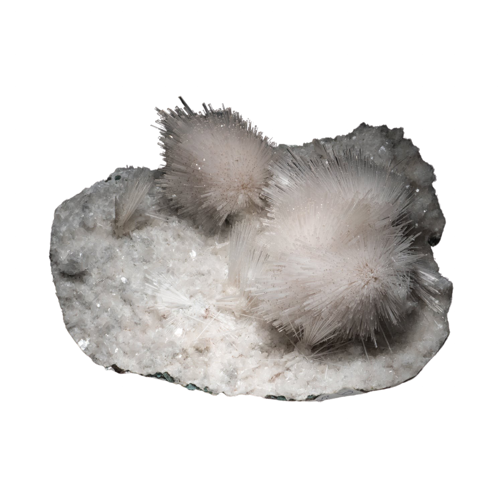

.
tectosilicate mineral
Colorless white, pink, salmon, red or
green
Monoclinic
.
.
Slc
CaAl2Si3O10 · 3H2O
zeolite
.

Origin
Scolecite is a hydrous calcium aluminum silicate that is a member of the Zeolite family. It is a secondary crystal that forms in the cavities of basalt, granite, and syenites. The mineral was first reported in 1813 by A.F. Gehlan and J.N. Fuchs in Germany, and was named for the Greek word meaning “worm”. This was referring to the stones tendency to curl when heated with a blowtorch. Scolecite is formed in slender prismatic crystals and is also found in abundance in large masses. It ranges in color from white, pink, purple, yellow, and red to even colorless. Scolecite can be found in very rare crystal forms in Iceland and very few parts of India, but can be found in masses all across the globe including USA, Europe, and Africa.
Meaning & Energy
Scolecite is the stone of “inner peace”, and will be the perfect remedy for anyone looking to relax, especially after a long day. The crystal actives our upper chakras and is commonly used as a meditation tool. When holding a piece to the third eye, one will immediately feel slow, pulsating vibrations massage our 6th chakra. Scolecite strengthens and unlocks our third eye and allows for intense lucid dreaming. With it, extreme vividness and enhanced memory of your nightly inter-dimensional travels is very common. When meditating with the intention of auric cleansing or self-healing, it is important to do so from the heart. Scolecite may work on a higher vibration with the upper chakras, but it also unlocks the heart and pushes it to release anything that may be causing pain from within. This stone is a total auric cleanser and will in a sense do a “spring cleaning” on you when working with it daily. It’s important to cleanse and sage Scolecite after you’ve worked with it due to it pulling out negative energy from within and absorbing it. The Council recommends carrying Scolecite with you daily as a reminder to focus on yourself and to open up your hearts energies to those around you. Scolecite is very good stone for anyone looking to do dream work or enhance their memory. It is a stone that prides itself on helping you be able to understand imagery within dreams and the correlation that it may play on in your life. Everything within our dreams has a meaning about something in reality, and this stone aids us in this discovery. Being able to understand our dreams can help us move forward and educate ourselves on where we want to go and how were going to get there.